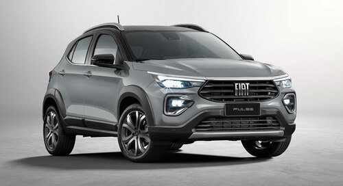
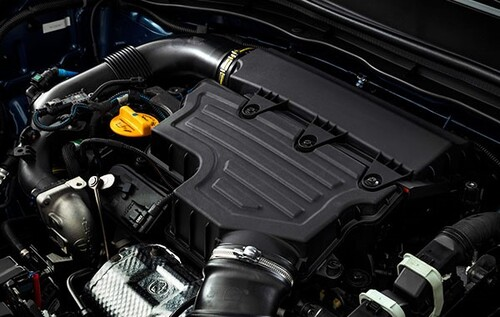
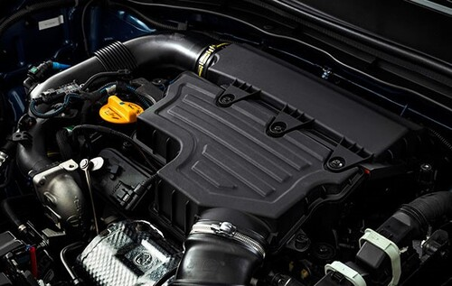

Es uno de los productos que más expectativas generó en los últimos meses y tras su presentación en Brasil hacia fines del año pasado y la incorporación a su oferta de plan de ahorro, finalmente Fiat presentó la gama completa del Pulse en Argentina en un evento realizado en los estudios de Telefe.
A diferencia del país vecino, aquí el B-SUV llega en tres versiones pero con solo dos niveles de equipamiento (Drive e Impetus, mientras que en Brasil se agrega la opción intermedia Audace) pero con un listado muy completo de confort, tecnología y seguridad, que incluye asistencias a la conducción en la variante tope de gama. Asimismo, también representa el debut del nuevo motor Firefly 1.0 turbo.
Es el esperado B-SUV de la marca italiana que fue presentado a fines del año pasado en Brasil y que recientemente fue lanzado en nuestro país sólo para plan de ahorro. Ahora está disponible con su gama completa de tres versiones y dos motorizaciones.
Desarrollado sobre la plataforma MLA –una evolución de la que utilizan el Argo/Cronos, con más refuerzos estructurales y tecnología que le permiten contar con más elementos de seguridad y asistencias a la conducción, estéticamente su aire de familia con el hatchback es innegable, pero también cuenta con características propias que logran diferenciarlo. En primer lugar, el sector frontal fue reformulado por completo. Posee faros más grandes, de formato más horizontal e iluminación de Led, tanto para las luces principales como para las de circulación diurna. La parrilla también es más grande que en el hatchback y se caracteriza por sus tres barras horizontales, el nuevo logo de la marca en el centro y la Fiat Flag es la esquina izquierda. El paragolpes se destaca por las tomas de aire de los extremos –que sirven a la vez como marco para las luces antiniebla- y la del centro, de formato trapezoidal.
De perfil es donde más se nota el aire de familia con el Argo, ya que comparte con él las puertas y el pilar A. Para darle un toque más personal, agrega el techo pintado de negro en contraste con la carrocería, un recurso muy utilizado por otros competidores. Tampoco faltan las barras de techo y unas vistosas llantas de aleación con terminación diamantada, así como las suspensiones con mayor despeje.
Por último, la parte trasera es, al igual que el sector frontal, una de las partes con mayor personalidad: posee un portón trasero con trazos y formas más marcadas que en el hatchback, junto con faros de aspecto más tridimensional. El portón está rematado por un prominente alerón que continúa la línea y el color del techo.
Puertas adentro, la marca italiana decidió jerarquizar al Pulse con un tablero completamente distinto y con nuevos elementos que poco a poco se irán introduciendo en el resto de la gama. Todo el frente es de diseño propio, comenzando por la pantalla del sistema multimedia y las salidas de aire trapezoidales que se ubican por debajo. También son nuevos los comandos de la climatización, que mantiene perillas y botones físicos, más intuitivos que otros sistemas que recurren sólo a superficies táctiles. Según la versión, puede contar con instrumental digital y un sistema multimedia con pantalla táctil de hasta 10,1”. El volante también es de nuevo diseño, especialmente en el centro y con la base plana, que, además de contar con comandos multifunción, agrega una tecla roja para la función Sport (a partir de la versión Drive CVT).
Las versiones Drive están impulsadas por el conocido motor naftero Firefly 1.3 de cuatro cilindros en línea, que desarrolla 99 CV a 6.000 rpm y 13 kgm de torque a 4.000 rpm. Puede asociarse a una caja manual de 5 marchas o a la nueva transmisión automática CVT con 7 marchas simuladas.
.jpg) 

La versión Impetus está disponible con el nuevo motor Firefly 1.0 turbo de tres cilindros en línea. En este caso entrega 120 CV a 5.750 rpm y 20,4 kgm de torque a 1.750 rpm y se acopla únicamente a la caja automática CVT con 7 marchas simuladas. Toda la gama cuenta con tracción delantera y la función TC+ (Traction Control Plus, que simula un diferencial autoblocante como en la Strada).